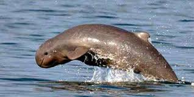
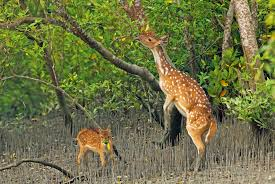
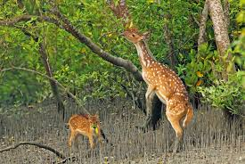

Beautiful Bangladesh
information of khulna
Some images of beautiful places of khulna

 

Plan Your Khulna Vacation 05/03/2017 05/05/2017 2 Guests, 1 RoomSearch Hotels Khulna Banner.jpg Get inGet aroundSeeDoBuyEatSleepStay safe Khulna is the main city in Khulna Division in Bangladesh. On the bank of Rupsha (and Bhairav) river, it is known as the industrial city and located in southern part of Bangladesh. A large part of the Sundarbans, a UNESCO world heritage is located in Khulna. It has many Jute mills, the only newsprint mill and hardboard mill of Bangladesh, the only state-owned match factory (Dada match, later Dhaka match), Oxygen company (BOL), Ship yard. Khulna is the 3rd largest city in Bangladesh after Dhaka and Chittagong. It is a quiet, calm city inhabited by 1.5 million people. Get in[edit] By air[edit]